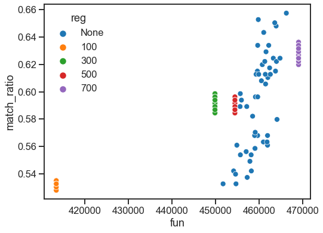

Matching the C. elegans connectomes¶
Here we compare performance on matching the C. elegans male and hermaphrodite chemical connectomes. The connectomes have been reduced to the intersection of their largest connected components prior to loading in, so they share the same node set.
import datetime
import time
import matplotlib.pyplot as plt
import numpy as np
import pandas as pd
import seaborn as sns
from scipy.optimize import quadratic_assignment
from pkg.data import load_c_elegans
from pkg.gmp import quadratic_assignment_ot
from pkg.io import savefig
t0 = time.time()
def stashfig(name, **kwargs):
savefig(name, foldername="elegans", print_out=False, **kwargs)
Load the data¶
male_adj, herm_adj, cell_names = load_c_elegans()
Run the graph matching experiment¶
correct_inds = np.arange(len(herm_adj))
def compute_match_ratio(inds, correct_inds):
matched = inds == correct_inds
return np.mean(matched)
vanilla_options = dict(maximize=True, maxiter=150, tol=1e-5, shuffle_input=True)
goat_options = dict(maximize=True, maxiter=150, tol=1e-5, shuffle_input=True)
currtime = time.time()
n_init = 50
rows = []
for i in range(n_init):
res = quadratic_assignment(male_adj, herm_adj, options=vanilla_options)
res["match_ratio"] = compute_match_ratio(res["col_ind"], correct_inds)
res["method"] = "vanilla"
res["reg"] = "None"
rows.append(res)
for reg in [100, 300, 500, 700]: # above 700 usually breaks
goat_options["reg"] = reg
res = quadratic_assignment_ot(male_adj, herm_adj, options=goat_options)
res["match_ratio"] = compute_match_ratio(res["col_ind"], correct_inds)
res["method"] = "goat"
res["reg"] = reg
rows.append(res)
print(f"{time.time() - currtime:.3f} seconds elapsed.")
results = pd.DataFrame(rows)
results.head()
603.042 seconds elapsed.
| col_ind | fun | nit | match_ratio | method | reg | |
|---|---|---|---|---|---|---|
| 0 | [355, 354, 66, 3, 4, 62, 6, 7, 8, 9, 10, 11, 1... | 466202.0 | 50 | 0.657277 | vanilla | None |
| 1 | [289, 0, 275, 3, 281, 75, 10, 38, 8, 9, 285, 1... | 413488.0 | 22 | 0.528169 | goat | 100 |
| 2 | [42, 228, 2, 3, 4, 5, 6, 38, 8, 10, 285, 11, 1... | 449849.0 | 42 | 0.591549 | goat | 300 |
| 3 | [1, 163, 2, 3, 4, 267, 9, 38, 8, 10, 285, 12, ... | 454419.0 | 31 | 0.586854 | goat | 500 |
| 4 | [2, 163, 62, 3, 4, 75, 5, 38, 8, 10, 9, 12, 11... | 469003.0 | 38 | 0.624413 | goat | 700 |
Plot results¶
sns.set_context("talk")
fig, ax = plt.subplots(1, 1, figsize=(8, 6))
sns.scatterplot(data=results, x="fun", y="match_ratio", hue="reg", ax=ax)
stashfig("elegans-fun-vs-match")

End¶
elapsed = time.time() - t0
delta = datetime.timedelta(seconds=elapsed)
print("----")
print(f"Script took {delta}")
print(f"Completed at {datetime.datetime.now()}")
print("----")
----
Script took 0:10:04.088688
Completed at 2021-03-16 10:08:37.867158
----